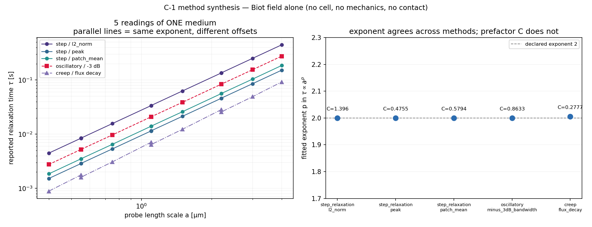

C-1 method synthesis — 5 readings of one medium
Biot pore-pressure field alone: no cell, no mechanics, no contact law.
build 2753580a
the scaling belongs to the medium and the magnitude belongs to the instrument (4 of 5 readings; 1 excluded for failing their own method's validity checks)
exponent spread 0.0002
(bound 0.1) ·
prefactor ratio 2.9357
(min 1.5)

| method | reading | exponent p |
prefactor C [a²/D] | r² |
points | verdict |
|---|
| step_relaxation | l2_norm | 1.9998 | 1.396 | 1.00000 | 11 | PASS |
| step_relaxation | peak | 1.9997 | 0.47553 | 1.00000 | 11 | PASS |
| step_relaxation | patch_mean | 1.9999 | 0.57942 | 1.00000 | 11 | PASS |
| oscillatory | minus_3dB_bandwidth | 1.9997 | 0.86331 | 1.00000 | 11 | PASS |
| creep | flux_decay | 2.0059 | 0.27772 | 0.99929 | 11 | FAIL |
May not be quoted for- any statement about a cell — every input is the field alone
- which reading is correct — they measure different functionals of one state
- the C-1 gate, which is scored on an indented cell
- a cytoplasm viscosity or any physiological magnitude
Replicate scatter: 0.0
the Biot field solve is DETERMINISTIC — no RNG enters it, so replicate scatter is exactly zero and running replicates would measure nothing. The uncertainty here is NUMERICAL, and it is bounded by the dx-invariance sweep and the fit r2, both of which are in the step record. C-1 section 6.1's three-replicate requirement binds the CELL measurement, where kinetics carry seeds; it does not transfer to this.